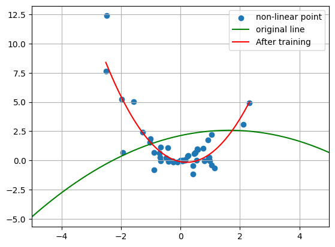
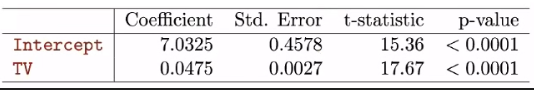
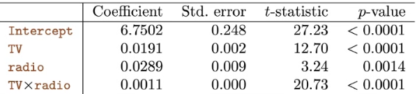
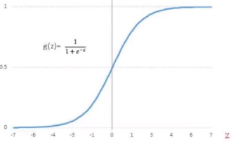
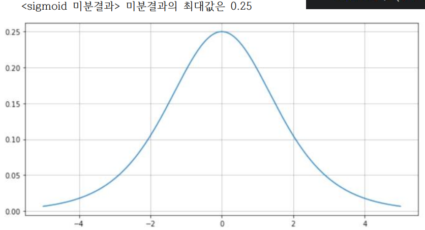

개요
참여중인 딥러닝 스터디 2주차 기록입니다.
1주차 과제 설명
큰 틀에서는 보통 아래의 순서로 진행
- 데이터생성
- hypothesis
- cost function
- optimizer
- train
- Prediction (=Inference)
tf.reduce_mean() : 열(row)끼리의 평균
Non-Linear Modeling
>\(y = ax^2 + bx + c\)구하고자 하는 값은 \(a, b, c\)
모델 학습 전 임의의 값(\(a,b,c\))으로 추세선 긋기

내가 가정하는 식을 hypothesis에 넣고 학습
def hypothesis(x): return a*(x)**2 + b*x + c def cost_fn(pred_y, true_y): return tf.reduce_mean(tf.square(pred_y - true_y)) optimizer = tf.optimizers.Adam(learning_rate = 0.01) def train(): with tf.GradientTape() as g: pred = hypothesis(X) cost = cost_fn(pred, Y) gradients = g.gradient(cost, [a,b,c]) # 기울기를 계산하는 부분 optimizer.apply_gradients(zip(gradients, [a,b,c])) # 계산된 기울기를 업데이트 해주는 부분 for step in range(1,1001): train() if step % 100 == 0: pred = hypothesis(X) cost = cost_fn(pred, Y) print(f" step:{step} cost:{cost:.4f} a:{a.numpy()} b:{b.numpy()} c:{c.numpy()} ") line_x = np.arange(min(X), max(X), 0.001) line_y = a*(line_x)**2 + b*(line_x) + c모델 학습 후 변경된 추세선 확인하기

Linear Regression
- Linear Regression의 Motivation
- 수 많은 데이터를 묘사하는 하나의 선을 긋고, 그 선으로 향후 추이(예를 들어 광고비와 매출의 관계 등)를 판단
- 랜덤하게 하나의 선을 긋고(임의의 W, b설정), 실제 데이터(점)과 선(예측값)의 거리[오차]를 줄인다
- 선형성이 있다는 가정 하에 모델링 수행 > \(Y = B_0 + B_1X + \epsilon\)
- 기존 수업의 \(Y = WX+b\) 식에서 \(B_0\)이 \(b\), \(B_1X\)이 \(W\)
- \(B_0\) :
intercept(첫번째 기울기는 \(B_1X\)으로 표현) - \(B_1X\) :
slope,coefficients - \(B_0\), \(B_1X\) 등을 합쳐서
parameter라고 부름 (가장 적절한 parameter를 찾는 것이 AI의 목적)
- \(B_0\) :
- 기존 수업의 \(Y = WX+b\) 식에서 \(B_0\)이 \(b\), \(B_1X\)이 \(W\)
- hat (\(\hat{B}\))은 최적화가 되었을 때 씌운다
- 처음에 임의값을 두었다가 학습을 하며 최적화가 되면 씌움
- residual(잔차)
- 예측값 \(\hat{y}\)(\(\hat{B}_0+\hat{B}_1x_i\))에 대해 정의된 오차 \(e_i\) (\(y_i-\hat{y_i}\))
- i번째 잔차(\(i\)th residual)
- 예측값 \(\hat{y}\)(\(\hat{B}_0+\hat{B}_1x_i\))에 대해 정의된 오차 \(e_i\) (\(y_i-\hat{y_i}\))
- RSS(Residual Sum of Squares) : 잔차를 제곱해서 더한 것 > \(e_1^2 + e_2^2+...+e_n^2\)
- 제곱이 아닌 절대값으로 해도 개념적으로는 오차를 계산 가능
- 최소자승법(least square)으로 최적의 \(B\)를 구하며 RSS가 줄어듦
- 최소자승법 : 그래프에서 오차가 가장 낮은, 미분값이 0인 지점 찾기
(오차가 0이 되는 지점을 미분으로 찾는 것이며, 이때의 오차는 Train set의 오차임) - 절대값으로 오차를 찾는 경우 미분을 활용할 수 없어, RSS를 사용
- 현대에는 최소자승법을 잘 안쓰고 GD를 사용 (GD : 하나의 랜덤한 점을 찍고, 최소점을 향해 근사를 반복해나감[epoch반복])
- 최소자승법 : 그래프에서 오차가 가장 낮은, 미분값이 0인 지점 찾기
- \(B_0\), \(B_1X\) 등 parameter를 구했을 때, 얼마나 신뢰할 수 있는 숫자인가
- Standard error(Variance에 루트를 씌우면 Standard error로, 본질적으로 같음)
- Variance는 모델의 안정성
- Standard error, \(SE(\hat{B}_1)^2\) 계산을 통해 얼마나 안정적인지 판단
- SE의 계산식은 데이터(샘플)가 많아질수록 분모(Sum)가 커지므로, 모델의 Variance가 낮아짐
- → 데이터가 많아지면 모델이 좋아진다
(최적의 \(B\)를 최소자승법으로 구해 모델을 만들고, 데이터 샘플의 수가 커지면 계산된 최적의 \(B\)가 가지는 SE가 줄어들음)
- → 데이터가 많아지면 모델이 좋아진다
- Confidence intervals(신뢰구간)
- 대학원 면접에서 많이 나오는 주제
- Variance(또는 SE)를 기반으로 신뢰구간을 구함 > \(\hat{B}_1 +- 2*SE(\hat{B}_1)\)
- 신뢰구간 95% / 평균 100 / 신뢰구간 80~120의 해석
- 모집단에서 샘플링을 했을 때 평균이 100
- 모집단 평균이 105, 110일수도 있지만 추정한 신뢰구간안에 실제 평균이 존재할 확률이 95%라는 뜻
- Variance가 낮아지면 신뢰구간이 좁아지며 좋아짐
- Standard error(Variance에 루트를 씌우면 Standard error로, 본질적으로 같음)
- t-statistic
- $ t = _1-0 SE(_1) $
- SE가 낮을수록 좋은 값이라는 점에서, 위 수식(t값)이 클수록 좋다는 직관적 이해 가능
- p-value : t값보다 클 확률 (즉 낮을수록 좋다)
- 결과 표 보며 이해하기
- coefficient : 구한 parameter값
- Standard error, t-statistic은 단위에 따라 달라질 수 있는 값
- p-value는 통일된 값으로, 0.0001보다 작으므로 Variance가 낮고 모델이 안정적이다 (p-value가 낮을수록 결과가 유의하다 라고 표현)
- \(R^2\)
- $ R^2$ = $ TSS - RSS TSS $ = $1 - RSS TSS $
- RSS(오차의 제곱을 모두 더한 잔차)가 클수록 작아지므로, 클수록 좋은 지표임을 이해
- TSS는 RSS보다 무조건 크므로, \(R^2\)는 0~1의 값을 갖는다
- \(R^2\)가 0.7이면 70%의 설명력을 가진다
- 주의할 점
- 상관관계에 대해 분석한 것으로,
인과관계가 아니다(인과관계라면 상관관계는 있을 수 있다)
- 상관관계에 대해 분석한 것으로,
Multiple Regression
- 변수와 계수를 추가하면 Multiple Regression이 됨
- 수식이 길어지고, * 편미분이 여러개가 나오게 되는 차이
- 변수가 2개가 되어 기존의
2차원평면/regression line이 아닌3차원평면/regression plain이 나옴 - multiple matrix를 활용해 표현 (row, column)
- RSS도 행렬식으로 표현
역행렬은 엄청난 연산이 필요한데, 이는 least square를 사용하지 않게된 이유임 (정형데이터 위주였던 과거와 달리 이미지 등 데이터와 이에 대한 행렬이 매우 커져, computing성능발전에도 역행렬 계산 어려워짐)least square는 Bias를 최소화하는 방법인데, trade-off로 Variance커질 위험이 커서 사용하지 않게 됨- 현대는 모델의 Variance가 중요해짐. Overfitting과 관계된 Variance를 줄이기 위해 약간의 Bias상승은 감내
- Least square(최소자승법)는 오차가 0이되는 지점을 미분으로 찾는 방법이며, 이때의 오차는 Train Dataset으로 오차가 너무 작아지면 Overfitting
- Correlation 상관관계
- Variable간의 상관관계를 보는 이유 : 중복되는 변수의 과대평가, 타 변수의 과소평가를 방지 (예를 들어 연봉과 자산의 경우 상관관계가 있음)
- GD(Gradient Descent, 경사하강법)
- 역행렬의 계산량문제로 최소자승법(least square)가 아닌 GD방식을 사용
- \(a\) (learning rate)로 적절히 작은 숫자를 곱해, 한번에 너무 많이 이동(하강)하지 않게 함
- 보통 0.01사용
- $W = W - a * $ $ c W$
- 코드로 이해하기
- Cost를 가중치W로 미분 (gradient 함수로 $ c W$구하기)
# gradient 계산 gradients = g.gradient(cost, [W,b])- 가중치W 업데이트 (apply_gradients 함수로 \(W\) 업데이트)
# gradients에 따라 W와 b 업데이트 optimizer.apply_gradients(zip(gradients, [W,b]))
- Single Regression에서는 없던 Multiple Regression의 고민
- 변수의 갯수 (많이 쓴다고 좋은게 아니며, 최적의 갯수 찾기)
- forward(↔︎backward) selection
- 변수의 갯수를 늘려가다가(↔︎줄여가다가), 성능이 낮아질때 직전 갯수로 사용
- 변수의 갯수가 달라졌을 때 성능의 지표
- AIC(Akaike Information Criterion)
- BIC(Bayesian Information Criterion)
- Adjusted \(R^2\)
- CV(Cross-validation)
- forward(↔︎backward) selection
- 요즘은 Linear Regression에서 발전된 알고리즘이 많이 나와서, 위의 것보다 먼저 알아야 하는게 많음
- 변수의 갯수 (많이 쓴다고 좋은게 아니며, 최적의 갯수 찾기)
- Qualitative Predictor(Categorical, 범주형 변수)
- 숫자가 아닌 상태로 쓰이는 경우 (0남자 1여자 등, 여러개도 Okay) 활용하여 Regression에 반영할 수 있게 됨
- 예를 들어, 구하고자하는 y가 키(신장)이라면, 성별변수 남자가 0이면 가중치는 음수, 반대면 양수가 될 수 있음
- 숫자가 아닌 상태로 쓰이는 경우 (0남자 1여자 등, 여러개도 Okay) 활용하여 Regression에 반영할 수 있게 됨
- Interaction impact(Synergy impact)
- 변수가 구하고자하는 y가 아니라 다른 변수에도 영향을 미치는 경우
- 서로 관계있는 두 변수를 곱하여 추가해줌(\(X^1, X^2\)가 관계있는 경우 \(X^1*X^2\)라는 변수로)
- 결과 표로 이해하기
- radio의 p-value가 유의하지 않아 변수제거를 했을 때, 파생변수인 radio*TV는 어떻게 할까?
- 제거한다 (오리지널 변수를 제거한다면 파생변수도 제거, 오리지널이 있을때만 사용가능)
- Hierarchy principle : 파생변수가 존재하려면 오리지널 변수도 있어야 함
- Coefficient 값 기준으로 radio가 TV보다 더 중요한 변수인가?
- Coefficient는 단위(unit)를 간과하므로, 높다고 해서 반드시 중요한 것은 아니다
- radio의 p-value가 유의하지 않아 변수제거를 했을 때, 파생변수인 radio*TV는 어떻게 할까?
- 변수(feature)의 관계는 독립적인게 좋음
- 변수가 구하고자하는 y가 아니라 다른 변수에도 영향을 미치는 경우
- Non-linearity의 Multiple regrssion 활용한 표현
- 예를 들어 전반부는 정비례 / 후반부는 반비례 한다면
- \(B_1 *나이 + B_2 * 나이^2\) 와 같이 표현 가능
- 위의 표현식은 변수의 독립성을 저해하는가?(사용해도 되나?)
- 서로 다른관계를 묘사하는 것이라면 사용 가능
- 연봉, 자산 모두 대출점수의 양의 상관관계라면 사용 불가
- \(B_1 *나이\)는 양의 상관관계, \(B_2 * 나이^2\)는 음의 상관관계라면 사용 가능
- 서로 다른관계를 묘사하는 것이라면 사용 가능
- 다만 변수가 많아지면 한계가 있으므로, 비선형에 적합한 타 모델이 더 좋음
- 예를 들어 전반부는 정비례 / 후반부는 반비례 한다면
- 상관관계를 빠르게 파악하는 법 : 모든 산점도(Scatter plot)를 그려보기
- 미리 파악하여 상관관계가 있는 것을 빼고 모델링하면 더 좋은 결과가 나타남
- 중복변수가 들어가거나 하더라도, Robust한 모델을 사용하는 것도 좋은 방법
Logistic regression
- Linear regression으로 현재까지 예측문제를 풀었다면, Logistic regression으로는 분류문제를 풀 수 있다
- 머신러닝으로 푸는 큰 3가지 문제 : 예측 vs 분류 vs 클러스터링
- 분류 : 메일이 왔을 때 스팸인가 아닌가, 신용카드승인내역이 이상거래인가 정상거래인가
- Hyphothesis의 반영
- 기존의 Linear regression(\(y=Wx+b\))의 식으로는 놓치는 case가 많이 생김
Logistic(Sigmoid) function을 활용하여 해결 가능
- z가 아무리 커지거나 작아져도 0~1사이에서 벗어나지 않음
- 0.5를 기준으로 판단가능 (Pass/Fail, 스팸/정상 등)
- z부분에 기존에 데이터를 학습했던 Linear regression식(\(y=Wx+b\))을 넣으면(plug-in), 분류문제를 푸는 함수로 바꿈
- 값이 0.7이 나온다면, Pass확률이 70%인 것으로 해석가능
- Descision boundary 경계영역
- 예를 들어 2가지 Case를 분류하는 Linear Line이 있다면, 그것이 Descision boundary (Non Linear한 경우라도 분류문제를 풀 수 있고, 그 Line은 Descision boundary)
- Cost function에서는 문제가 생김
Sigmoid function으로 간편하게 분류문제를 푸는 함수로 바꿨지만, 기존처럼 미분을 하면 문제 발생
- 값이 조금만 크거나 작아져도 기울기가 0이 됨 → 기존의 Mean Square방식 적용 불가
 - GD 사용시 최적 지점까지 가지 못하는 경우 발생
- 값이 조금만 크거나 작아져도 기울기가 0이 됨 → 기존의 Mean Square방식 적용 불가
Cross entropy를 사용하게 됨[Cost function으로 사용되기 위한 2가지 조건] 1. 클수록 나쁘고 작을수록 좋아야 함 2. 미분이 가능해야 함 (미분이 안되는 경우 : 평평한 부분이 있거나, 위아래로 변동이 큰 구간이 많은 경우) * 두 조건을 충족하는 것은 쉽지 않으며, Accuracy는 1번만 충족 * Cross entropy는 위의 2개 조건을 모두 충족- 2가지 상황(y=0[pass], y=1[fail])에 대한 상황에 대해 다른 식 사용
- 필요시 하나의 식으로도 나타낼 수 있음 (y값에 따라 한쪽 식이 0이 되는 형태)
- 현대에서도 많이 쓰이는 함수인 Cross entropy (gpt4 등)
- GD경사하강법으로도 사용 가능
- 2가지 상황(y=0[pass], y=1[fail])에 대한 상황에 대해 다른 식 사용
모형예측(Classification)의 성과평가(Confusion matrix)
Accuracy(정답률) : 실제값 중 맞춘 비율
- 분류가 Imbalance한 경우 한계가 있음(신용카드 경우도 대다수가 정상거래) (예를 들어 암환자 비율이 90%이상일 때, 로직없이 그냥 암환자로만 판정해도 정답률 높음)
Precision(암으로 판정한 사람 중, 실제로 암) vs Recall(실제 암인 사람 중, 암으로 판정된 사람)
- 암환자를 정상환자로 판단하는 것은 치명적
- 암과 같은 케이스는 기본적으로 암으로 ’판단’하는 것이 많아져야하므로 Recall을 사용 (분자가 ’암 판정’인, 분자가 커질수록 점수가 높은 recall을 사용하는게 적절)
- 프로젝트 특성에 따라 적합한 모델 뿐 아니라 적합한 지표를 사용하는 것이 중요
Precision이 더 중요한 케이스
- 불량제품 하나를 검수하기 위해 1만개의 정상제품을 검사하면 비효율적
- 1개의 불량제품을 감수하고 1만개를 살리는게 효율적
분류가 balance한지 imbalance한지를 체크
F1 score : Precision과 Recall의 조화평균
Confusion matrix를 그래프로 visualize 해서 보여주면 더 설득에 용이
Copyright © 2024 Kibok Park All rights reserved.